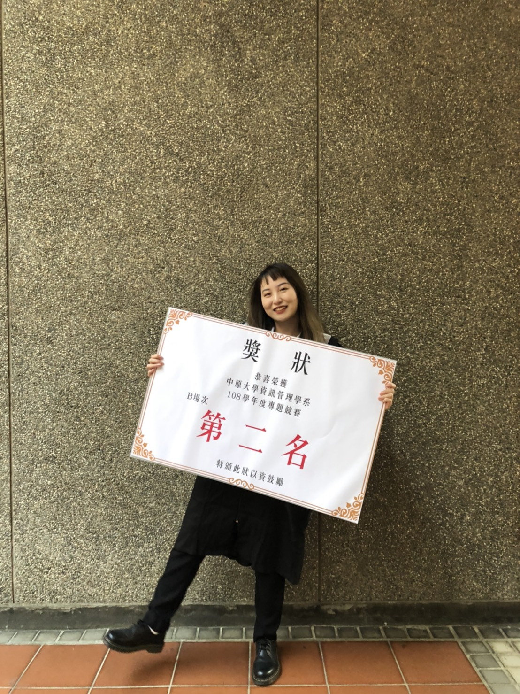
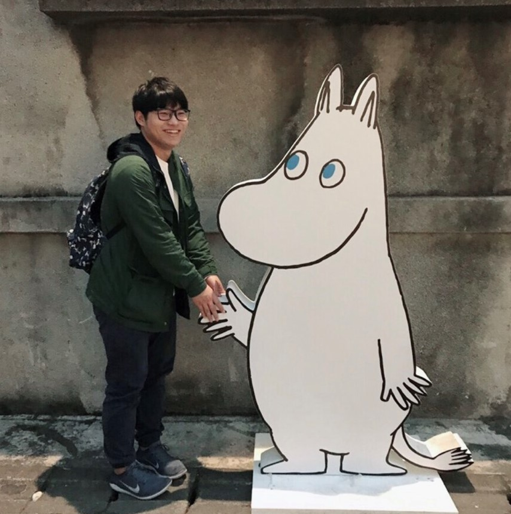
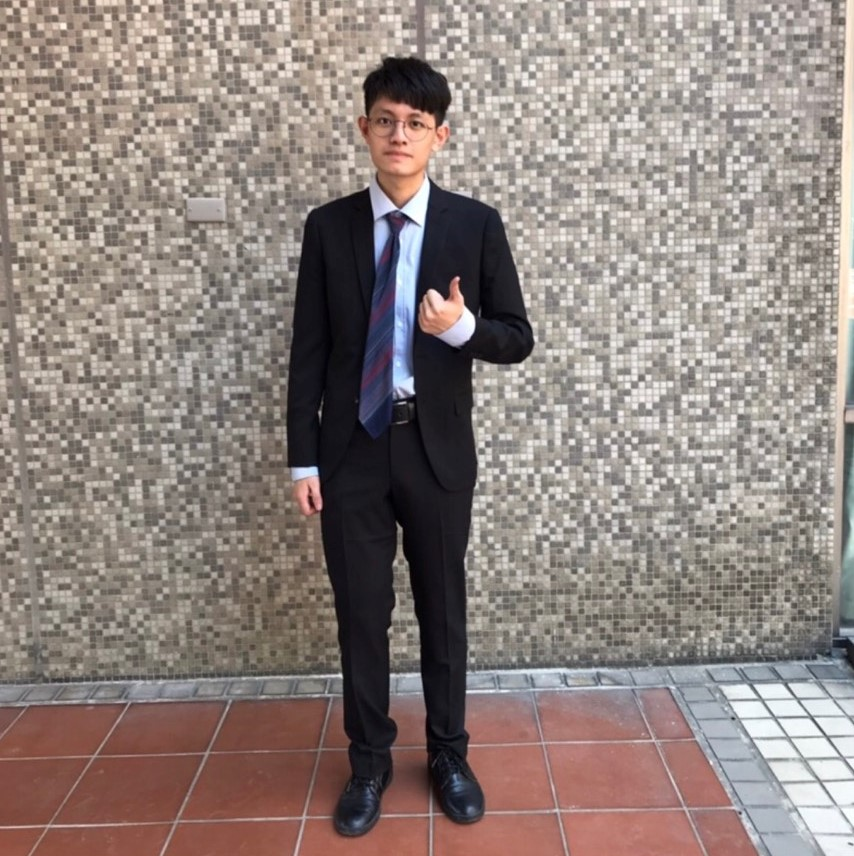

組員資料

10544211 資管四乙 高瑜亭
自我介紹：我是一個樂觀開朗的人
專題參與心得：經過這次專題，我學到了很多東西，不論是與組員之間的溝通，還是撰寫文件及手機前端的部分，也謝謝老師及學長姐給予很多幫助及建議，在最後複審也得到了第二名的成績，讓我覺得這一年的努力沒有白費了，也謝謝老師給我們這麼好的題目。

10544242 資管四乙 鄭又寧
自我介紹：我是一個活潑外向的人，喜歡與人交談
專題參與心得：經過一年的專題，在這之中學習到了很多，一個從無到有的主題，從一開始構思整個主題的方向、結構，甚至到我們Iot該如何實踐，都是經過一番的討論與研究，在金老師身上也學習到了很多，他教導我們所有他能給我們的，思考如何建立一個強大的商業模式，給予我們業界資源與經驗的傳承，這一年中在夾鬼夾怪上付出很多也得到很多，也感謝身旁的夥伴、老師、學長姊，我終於可以畢業了！

10544224 資管四乙 邱定騰
自我介紹：興趣是看網飛
專題參與心得：經過這學期的專題學會了很多東西，謝謝金志聿老師還有每位學長姐的幫忙，解決我們的各種問題。

10544229 資管四乙 林哲民
自我介紹：我很愛晚睡又很愛睡覺
專題參與心得：經歷這學期專題從金老師那裡徹底瞭解到努力不懈是才是解決問題的方法而非因為困難而太早放棄，感謝組員們認真的報告以及對於App的認真撰寫，也感謝學長姐們提供的各個資源以及協助，綜合以上幾點缺一不可，才使我們能獲得好成績。